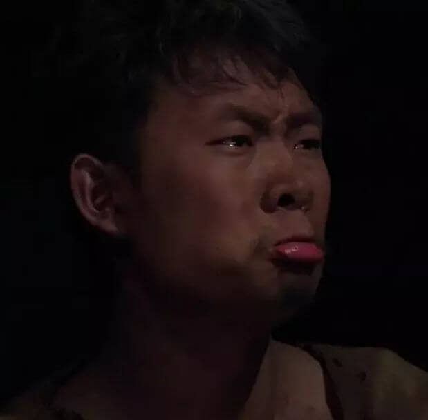
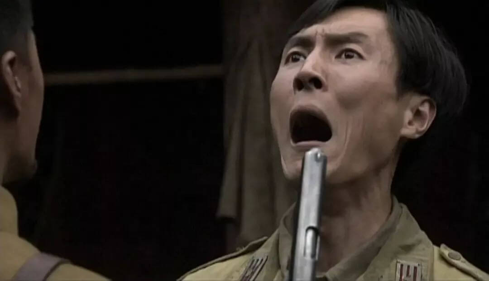
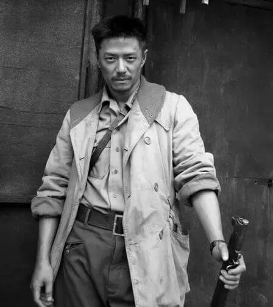

前言 —— 波折的更新
MPY634的存在便是为了记录某蛋影评与剧本。仔细数数日子距离上一次更新已经是四个月之久了。在我的不断吹更声中，某蛋终于从大三繁忙学业抽出身来——是的，MPY634更新了。
简介
《我的团长我的团》改编自兰晓龙的同名小说，首播时间是2009年3月，讲述的是抗击日本侵略者和承受苦难的故事。43集的战争题材电视连续剧能在豆瓣拥有9.4的评分，确实值得一看。
Fall
曾经被我扬言要用于敦促自己勤加写作的公众号，由于近三个月没有更新（虽然起码已经是一月才一更，三个月还是历史新高），已经变成了一颗茁壮生长的蘑菇，如果继续保持不更，最后可能会变成一片欣欣向荣的蘑菇林，但我今天要把这个进程扼杀于襁褓中。
这么久没写东西，一是因为我实在很懒惰，二是我没有发言欲望。想要发言的激情是至关重要的，很多人没有什么值得听的发言内容，但因为有这个激情他们还是能像机枪扫射一样地输出；但如果没有这欲望，哪怕肚皮里装着太平洋也吐不出什么水来。我肚皮里没有太平洋，早上喝下去的牛奶倒是有一点，但就是这点牛奶，我都觉得说出来太过麻烦。
人但凡想表达自己，总要有个听众。就好像在台上唱戏，如果没什么认真的观众，表演就成了一件麻烦事，得纠结自己对空气滔滔不绝是否太过可笑，但又不能干脆胡来一气，不professional。要让创作的人把表达记录纯粹当成个人收藏是很难的，但一个人正儿八经用心记下的东西可能真的一丁半点儿也不对另一个人的胃口，这种安利是卖不出去的。所以虽然有很多人说“做这个东西只是为了记录我的一点想法”，实际上还是想听到别人说“你这个东西令我觉得如何如何”，我不能免俗。虽然不能免俗，但我觉得这事儿正常且无解且没有解的必要。作为表达的人我当然感觉有点徒劳和无奈，但我明白这不是我的错。
另一方面，就算有观众认真听戏了，结果发现我这戏唱得乱七八糟毫无水准，一气之下拂袖而去，那我这儿也是一头雾水，根本不知道他在气什么。这是因为，首先，我可能不知道自己唱得烂，还在期待别人的褒奖；再有，他可能不知道我其实唱得好，还以为自己很懂行；或者，我唱得也还行他水平也不错但他就不喜欢我这样的。这种情况基本是可以解决的，大家一起努力学习提升高度，收工了再文明发言交流想法，不保证两边都能快乐，但两边都会倾情投入。我觉得不欢而散的倾情投入比和和气气的徒劳无奈好，因为我现在只有和和气气的徒劳无奈。
徒劳无奈，这四个字，出现在我生活里的频率太高了，几乎是我目前三观的主旋律。这不是那种虚弱矫情无病呻吟的感想，我基本上是快乐的，但这不妨碍我同时也觉得无力感是人们面对人生时最常体验到的，不管有没有意识到。绝大部分的事没有办法按照完美主义者的意愿臻至化境，但绝大部分的人会渐渐习惯接受有瑕疵的，染了尘的事情存在，包括龟毛的完美主义者，虽然他们不承认。有些人对这种瑕疵的忍耐度特别高，有些人低一点，最难受的情况是明明不太能忍，却一次次无力改变，最后不得已地撂手说“那就这么着吧”并怀抱着没有消失殆尽的高要求从此生活在厘不清的矛盾中。

此类人物的典型代表，孟烦了。孟小太爷书香门第出身，弃笔从军抗击日寇，通晓军理，政治嗅觉敏锐，甚至连枪法都十足牛逼。他一上战场，几乎是立马就，开启了屡战屡败的戎马生涯。溃逃四年，全军尽墨，装死捡命，腿也瘸掉一条，聪明绝顶的脑袋瓜子，自此用来思考怎么损人最拐弯抹角又一针见血。他跟不辣迷龙那些人根本上是不一样的，他就是那个清楚地意识到了自己的无力并且被其击溃的人。“那就这么着吧，大家活命最要紧”，其实他不知道活下来去哪，做什么，依靠谁，但是他的无力感过于强大，强大到表面上看他甚至是那个最不纯粹不伟大的。

与此相对，两个理想主义者，林译和虞啸卿，本质上相同，对自己对他人对全局，都因为过度的理想主义而产生了有失偏颇的认知。在烦了的叙述里，林译是笑柄，虞啸卿是孩子。这很好理解，烦了过早地认识到理想主义的虚无，在他的眼里这俩人就应该是幼稚的形象。例外的是，“赤色分子”们的理想主义，好像给了烦了一点不一样的感触，可能是因为他们真的为理想献身了，自认为参破红尘的小太爷也开始思考这种幼稚是否真的毫无可取之处。

龙文章呢，是个中间产物。他很清楚烦了那种无力感，也理解虞啸卿的愤怒和理想。他和虞是同类，但同时也被和烦了一样的认知日夜折磨。他不停地重复着“我想让事情是它本来该有的样子”，却也一直无法遗忘南天门上那一千座坟。他为了保全炮灰团隐瞒了那个“不是人打的”的作战计划，最终却还是选择带着最亲的人压上。他好像参透了所谓的“无上密”一样，坦然地接受“这世上没有一尘不染的事”，但每一次坦然背后是在无数个未眠的夜里痛苦地挣扎。
我们大概可以推想，虞啸卿最后会成为唐基那样的人，完全控制了所有的无力感，在任何时候都能找到折中理想和现实的全局最优解。而不在意自己能否被人理解，不过是成为这个级别的妖孽要做的第一件事而已。聪明的烦了终于逃脱了人生的枷锁，重新捧起困扰自己已久的高要求，慢慢学会应对徒劳和无奈。龙文章没有什么进步的空间了，他早就想得太清楚了，他割舍不下虞能割的部分，所以成不了唐基，倒是跟小太爷一起吊儿郎当自在合适些。
尽管兰晓龙先生在这部作品里探讨了如此多元的价值观，在孟烦了和龙文章的牵引下我们还是能窥见作者的取向。哪怕已经清楚地认识到生活是荒诞，是困境，徒劳的事多如天上繁星，还是可以充满热忱地、乐观地、幼稚地去追寻理想主义，哪怕是没那么纯粹的。
我大概永远不能成为一个充满热忱的工程师，但如果徒劳无奈真的是生活的真相，我希望我能一直是一个充满热忱的观赏者和表达者。
More
欢迎关注公众号：候场杂记，分享我们的不定期"影评"